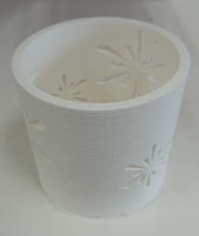

江の島展示
スケジュール
7/30 展示作品完成
8/22 モデル撮影手伝い
8/29 作品搬入
8/30-9/4 展示
目次
1.作品決め
2.試作
3.作品コンセプト
4.展示
5.感想
1.作品決め
4月－6月
木製のおもちゃを作るためMOCを使ってみたことがあったほうが言うアドバイスを受け、
海と関連した作品としてタコの椅子を作成する予定でレーザーカッターを用いて試作を作成
その結果パーツが多いこと、MOCが混む可能性があることから断念

7月－
ペットボトルに3Ⅾプリントしたものをかぶせて花瓶にしている作品から発想を得て、
ペットボトルホルダーを作成することを決定
2.試作
作成手順
1. Fusion360でデータ作成
2. ３Ⅾプリンターで出力
3. やすりで削る
4. （アセトンで溶かす）
5. 完成
初期試作


ペットボトルにかぶせて花瓶となるものを小さいペットボトルに合わせて出力
ペットボトルホルダーがいいとされたので、大きいサイズに合わせて作成し直し
試作２号

ペットボトルのサイズを測り、作成したが、ペットボトルの形がばらばらで入るものと入らないものがあった
そのまま入れただけでは持ち運びができないため、蓋をつける必要がある
蓋 試作


アクリル板を蓋にして、ペットボトルホルダーにはめ込むことができるようにした
しかし、蓋が外れやすくなっているため突起をつけてカチッとはめ込めるようにする
試作3号


実際に穴の開いたデザインを作って出力してみたところ割れやすくなってしまった
割れやすい原因としては出力時の密度が低すぎたと考えられるため、次回からは密度を高めにする
出力時の問題点としてはサポートが多すぎてフィラメントがもったいない状態になってしまっている
ペットボトルのサイズを1つに絞ったほうがいいというアドバイスを受けたので、evianのペットボトルに合わせることにした
試作4号

蓋がついた時のキャップが出る高さを考えていなかったため、高さに合わせたデータに調節する必要がある
試作5号

出力してみて、周りの模様がいびつであったり、きれいに出ていない部分もあったため、違う柄にする必要がある
飲み口の周りが痛そう・キャップが回らなそうという意見をもらったため改善
試作6号


飲み口の周りが痛そうという意見があったので、改善
薄めにしたら割れやすくなってしまったため調節が必要となった
飲み口

飲み口の部分のデータを編集し、滑らかにすることができた
以前と比べてとてもよくできたのでこの飲み口のデータにする
試作7号
.JPG)

楕円の模様をつけようとしたが、形が悪いのか、サポートがきれいに出力されておらず、サポートをきれいに外すことができなかった
サポートなしで出力できる形にしてみたらというアドバイスをもらったので、サポートなしで創れるデータを作成
底 確認

サポートなしで、出力する前にふたの部分がしっかり出るか確認した
少しだけフィラメントが飛び出るが、切り取れば問題はない
試作８号

魚のデザインにしようとしてみたところ、上の部分がきれいに出なかった
平面が出るときれいに出力できないので平面がでないようなデザインであることが必要
試作９号


サポートなしできれいに出力されていたのでこのデザインを使用する
先生から円形の部分をもう少し楕円に近くしたほうがいいと意見をもらえたので変更
試作１０号

きれいに出力されていたため、このデザインをしようとしたが、
全体に散りばめると少しダサい感じになってしまう
試作１1号

下のほうの形はきれいに出力されるが、上の部分がきれいに出力されない
試作12号

細い線が２本重なっているためきれいに出力できなかったと考えられる
この柄の成功率は低そうなので、違う柄にする
3.作品コンセプト
完成品
海に行くときれいな砂浜もあるが、ペットボトルなどのゴミが捨てられていたり、海から打ち上げられたゴミなどもある砂浜もある。
このような海洋プラスチック問題を防ぐためにはゴミのポイ捨てをなくすことが必要である。
今回作るペットボトルホルダーはただのペットボトルだと捨てられやすいが、
ペットボトルホルダーをつけることで、特別感と自分のごみという意識を高めさせるという意図がある。
4.展示
8/29 搬入

展示 8/30-9/4

5.感想
準備に長期間時間かかったが、実際に展示をしてみたら様々の人からの評価や意見を聞いて改善点が見つかったりして、ここまで頑張ってよかったという達成感ともう少し頑張ればよかったなという感想を持った。今回の展示を通して、スケジュールをしっかり立てること、ほかの人から意見をもらう大切さを学びました